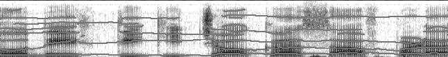

It is assumed that the formant information in the spectrogram has been extracted by the formant extraction module described in Section 3.1. The centroids of the formant bands, correspond to the maxima of the spectral peaks i.e the center frequencies of the formant bands. The spectrogram is processed along the time axis (y-axis), to pick the centroids of vertical connected massses of formant pixels. This results in the generation of broken sections of formant tracks in between longer, continuous sections, especially in the unvoiced segments of speech. These small formant track sections can be connected using first-order interpolation. The interpolation strategy adopted by us takes into account the frequency continuity constraint (as is performed by the human when extracting formants from a spectrogram) and hence closely approximates the actual formant trajectories.
The formant tracking procedure is detailed in Algorithm 2. For ease of implementation, the formant tracking is done separately for the voiced and unvoiced segments and the tracking results for both the segments are combined into a single image as shown in Fig. 4, where the tracked formants are seen as dark gray horizontal lines. For purpose of clarity, we have superimposed the tracked formants on the original spectrogram.
|  |